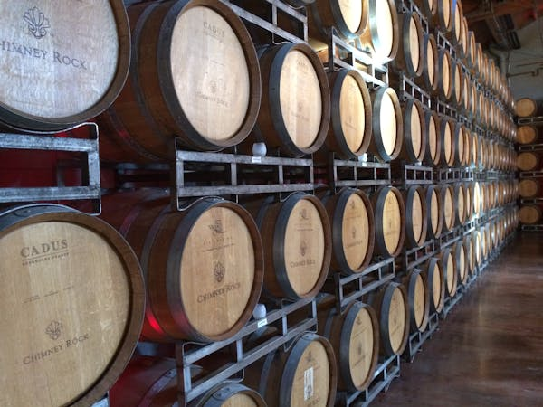
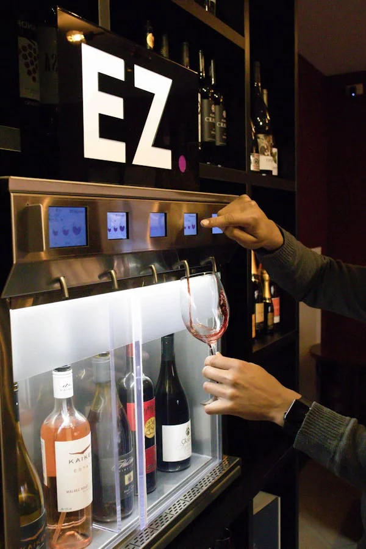

Início
Contato
Avaliações
Início
Contato
Avaliações
A Vinheria Agnello iniciou suas atividades em São Paulo há mais de 15 anos, contando com apenas uma loja física, sendo apenas um negocio de familia, onde coloca à disposição do mercado uma vasta gama de rótulos de vinícolas nacionais e internacionai
Um de seus principais diferenciais é o preparo de seus vendedores para orientar os clientes quanto às características de cada tipo de uva, região, vinícola ou rotulo de vinho, entre outros detalhes relevantes, sugerindo com base nesse conhecimento harmonizações com os mais diversos tipos de alimentos e refeições, e a adequação de vinhos às diferentes ocasiões de consumo.
Em decorrência da pandemia seu movimento sofreu um impacto significativo, dadas as restrições de mobilidade de seus compradores que se viram impedidos de frequentar a loja física e muitos acabaram migrando para lojas online. Com uma gestão tradicional e conservadora o sr.Giulio, proprietário da vinheria, resistiu por muito tempo à ideia de entrar no mundo do e-commerce, por julgar esse um meio um tanto “frio”, distante do cliente, e, portanto, não adequado para o padrão de atendimento que gosta de oferecer em sua loja. No entanto, depois de muito tempo a nossa vinheria esta oficalmente aberta para compras on-line, aproveitem!